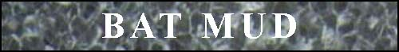
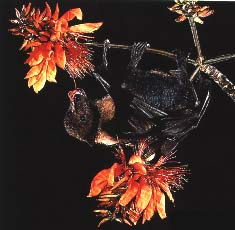

WELCOME TO

THE GREATEST MUD ON EARTH
Click to visit our site sponsor!



These pages are a guide to many of the areas in Bat Mud, a LP mud based out of Finland. For more information about the mud, visit the Official Batmud Home Page at http://www.bat.org. You may play the game (always free of charge) by telneting to "batmud.bat.org".
You must have a frames capable browser (such as Netscape) in order to browse this version of the site. Simply click on the area you'd like to learn about, using the frame at the side of your browser window. If you don't have a frame capable browser, the site is accessible at the same address via lynx (/).
Note: These WWW-pages contain information derived from BatMUD. As the mud is constantly evolving their accuracy cannot be guaranteed. All US and international copyrights for this website are retained. You may not copy or re-publish this information without explicit permission from Leslie Neal.
Paying 25k to the first player to mail me the most recent copy of the Bat area map.
If you encounter any difficulties while browsing these pages, please contact Dryad at leslie@maroon.com. If you have any information to add to the site (or corrections to make), send me mail here or use the update form provided at the bottom of most pages on the site.
Site visited
times.
Credits The following folks contributed significantly to site development: Jalin, my guardian angel Klerris Pharm Hands Gaurhoth Balin Jiriki Ramjett Kylraak Rubicon Galenos Blanko Totem Crush Fendor Crom Backlash Manacubus Cecilia Sinister(!) Dolmant Darkblood(!) Axl Tsengi Darshan Conquer Yozarian Grimsh Mav Tumi Zago Foxbat A huge THANK YOU for financial support goes to Crush! And thank you to Aarugotti for WHINE. :)
Dryad Willowisp, Codog Cuisinart
Dryad and Codog (aka Leslie & Cain Neal) live in College Station, TX. Dryad is a 24 year-old graduate student in structural geology at Texas A&M. Codog is a 25 year-old computer dude with Compaq. Wedding date was 7-30-94.
"Making the Outerworld Smaller (tm)"